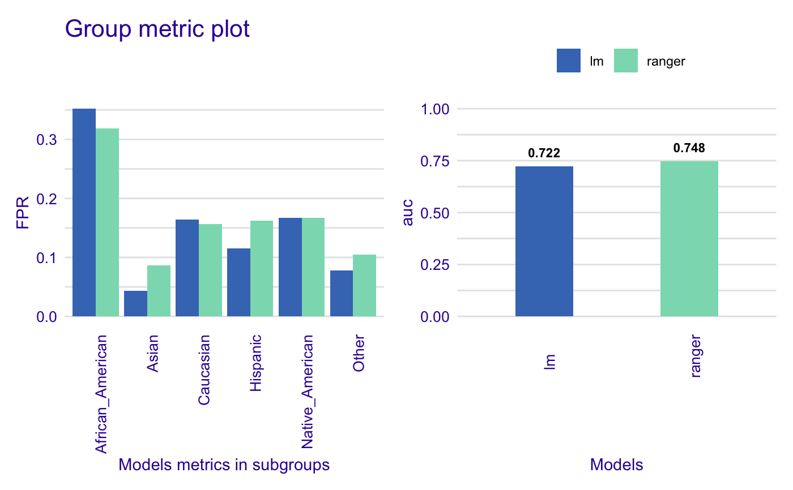

Group metric enables to extract data from metrics generated for each subgroup (values in protected variable)
The closer metric values are to each other, the less bias particular model has. If parity_loss parameter is set to TRUE, distance between
privileged and unprivileged subgroups will be measured. When plotted shows both fairness metric and chosen performance metric.
group_metric( x, fairness_metric = NULL, performance_metric = NULL, parity_loss = FALSE, verbose = TRUE )
| x | object of class |
|---|---|
| fairness_metric | character, fairness metric name |
| performance_metric | character, performance metric name |
| parity_loss | logical, if |
| verbose | logical, whether to print information about metrics on console or not. Default |
group_metric object.
It is a list with following items:
group_metric_data - data.frame containing fairness metric scores for each model
performance_data - data.frame containing performance metric scores for each model
fairness_metric - name of fairness metric
performance_metric - name of performance metric
Available metrics:
Fairness metrics:
TPR
TNR
PPV
NPV
FNR
FPR
FDR
FOR
TS
ACC
F1
MCC
Performance metrics
recall
precision
accuracy
f1
auc
data("german") y_numeric <- as.numeric(german$Risk) -1 lm_model <- glm(Risk~., data = german, family=binomial(link="logit")) rf_model <- ranger::ranger(Risk ~., data = german, probability = TRUE, num.trees = 200) explainer_lm <- DALEX::explain(lm_model, data = german[,-1], y = y_numeric)#> Preparation of a new explainer is initiated #> -> model label : lm ( default ) #> -> data : 1000 rows 9 cols #> -> target variable : 1000 values #> -> predict function : yhat.glm will be used ( default ) #> -> predicted values : numerical, min = 0.1369187 , mean = 0.7 , max = 0.9832426 #> -> model_info : package stats , ver. 4.0.2 , task classification ( default ) #> -> residual function : difference between y and yhat ( default ) #> -> residuals : numerical, min = -0.9572803 , mean = 1.940006e-17 , max = 0.8283475 #> A new explainer has been created!#> Preparation of a new explainer is initiated #> -> model label : ranger ( default ) #> -> data : 1000 rows 9 cols #> -> target variable : 1000 values #> -> predict function : yhat.ranger will be used ( default ) #> -> predicted values : numerical, min = 0.071 , mean = 0.6953362 , max = 0.999 #> -> model_info : package ranger , ver. 0.12.1 , task classification ( default ) #> -> residual function : difference between y and yhat ( default ) #> -> residuals : numerical, min = -0.7145511 , mean = 0.004663826 , max = 0.6161497 #> A new explainer has been created!#> Creating fairness object #> -> Privileged subgroup : character ( Ok ) #> -> Protected variable : factor ( Ok ) #> -> Cutoff values for explainers : 0.5 ( for all subgroups ) #> -> Fairness objects : 0 objects #> -> Checking explainers : 2 in total ( compatible ) #> -> Metric calculation : 13/13 metrics calculated for all models #> Fairness object created succesfullygm <- group_metric(fobject, "TPR", "f1", parity_loss = TRUE)#> #> Creating object with: #> Fairness metric: TPR #> Performance metric: f1 #>plot(gm)